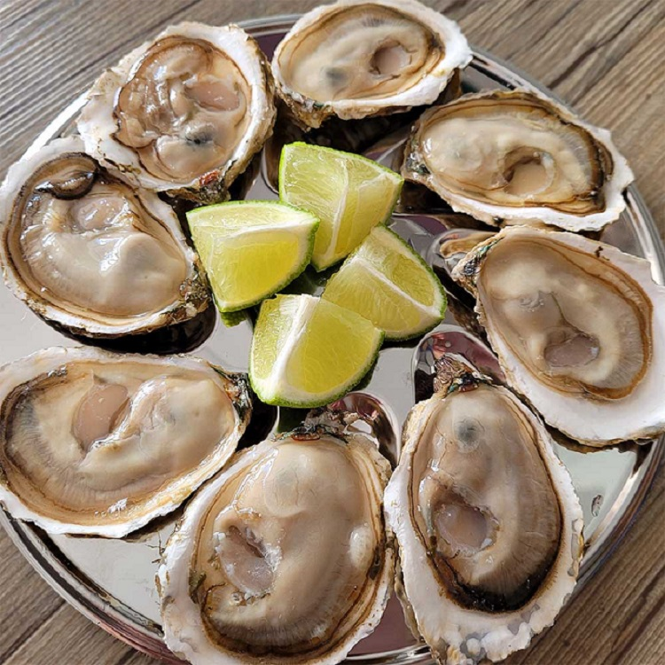
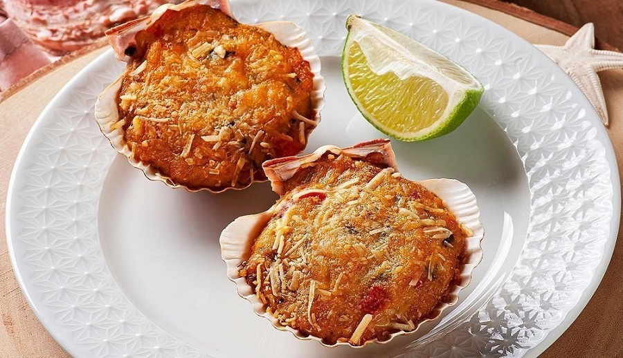

Comidas típicas de Floripa
Florianópolis é uma ilha para quem gosta de natureza, praias, trilhas e
uma boa comida típica.
Com sua gastronomia incrivel a beira do mar, Floripa oferece em
todos seu cantos da ilha praias maravilhosas com restaurantes para todos
gostos.
Seu carro chefe hoje é a sequência de camarão mas existem
muitas outras opções disponíveis.
Sequência de Camarão

A sequência de camarão é um prato típico da culinária catarinense,
especialmente nas cidades litorâneas. É composto por diferentes pratos
com camarão como ingrediente principal, como camarão frito, camarão na
moranga, camarão ao alho e óleo, entre outros. É servido em sequência,
geralmente acompanhado de arroz, salada e batatas fritas, e é uma
opção deliciosa para quem aprecia frutos do mar.
Tainha grelhada

A Tainha grelhada é um prato tradicional da culinária brasileira,
especialmente na região Sul do país. É feita com o peixe Tainha,
temperado com sal, limão e ervas, e grelhado em churrasqueira ou
grelha. É servido geralmente inteiro e acompanhado de arroz, feijão,
salada e farofa. É um prato saboroso e apreciado em ocasiões festivas,
como o período da pesca da Tainha.
Ostras

A ostra é um fruto do mar encontrado em águas salgadas em todo o
mundo. É servida como um prato gourmet, geralmente crua com uma pitada
de limão ou cozida, temperada com ervas e manteiga. É uma fonte rica
em nutrientes, incluindo proteínas, ferro, cálcio e vitaminas do
complexo B. A textura é suave e delicada, com um sabor salgado e
levemente adocicado.
Casquinha de Siri

A Casquinha de Siri é um prato típico da culinária brasileira,
especialmente na região Nordeste. É feita com a carne de siri
desfiada, temperada com cebola, alho, tomate, pimentão e especiarias,
misturada com farinha de mandioca e assada em uma casquinha de
mexilhão. É servida como um petisco saboroso e crocante, acompanhado
de limão e molho de pimenta.